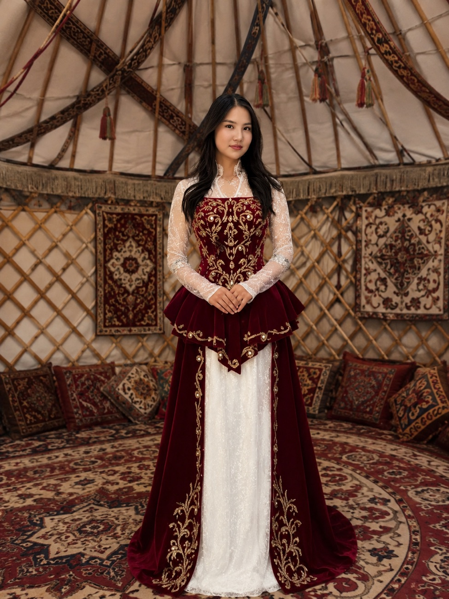

Чакырууну ачыңыз

Kyz Uzatuu
22-сентябрь, 2026-жыл · 17:00
Урматтуу коноктор
Сизди турмуш жолуна аттанып, ак жоолук салынып, жаңы үй-бүлөгө кадам таштап жаткан
кызыбыздын кыз узатуу тоюна арналган ак дасторконубуздун төрүнө чакырабыз.
Кызыбыздын жаңы жашоосуна ак тилек, баталарыңызды берип, кубанычыбызды тең бөлүшүп кетишиңиздерди чын жүрөктөн каалайбыз.
Сентябрь 2026
17:00
Тойго чейин
Урматтоо менен той ээлери
Арстан & Зуура